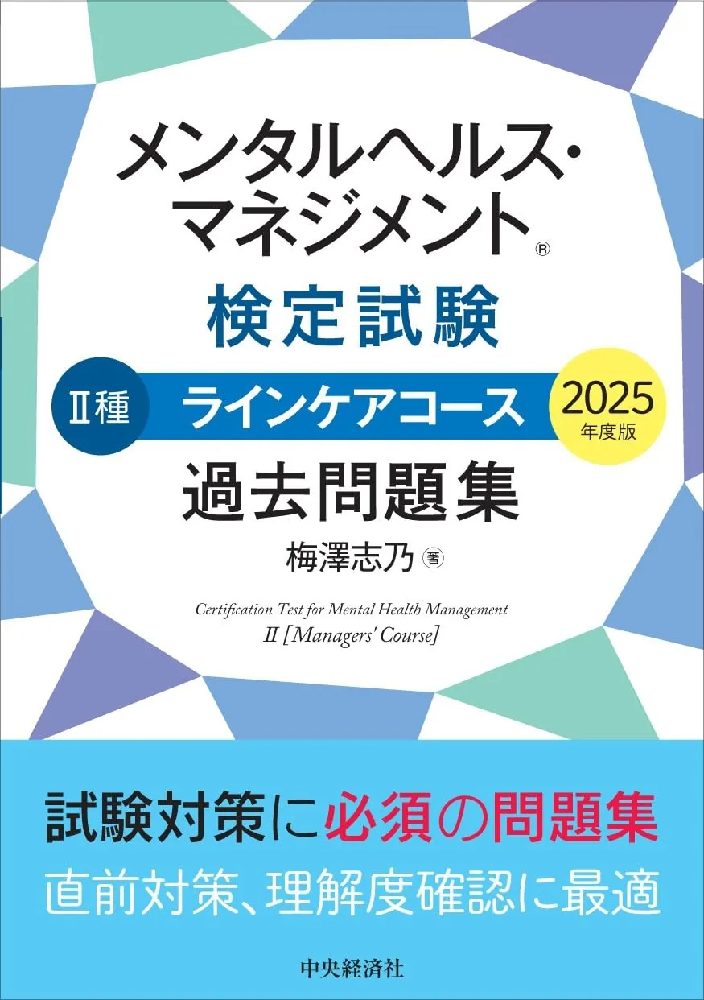
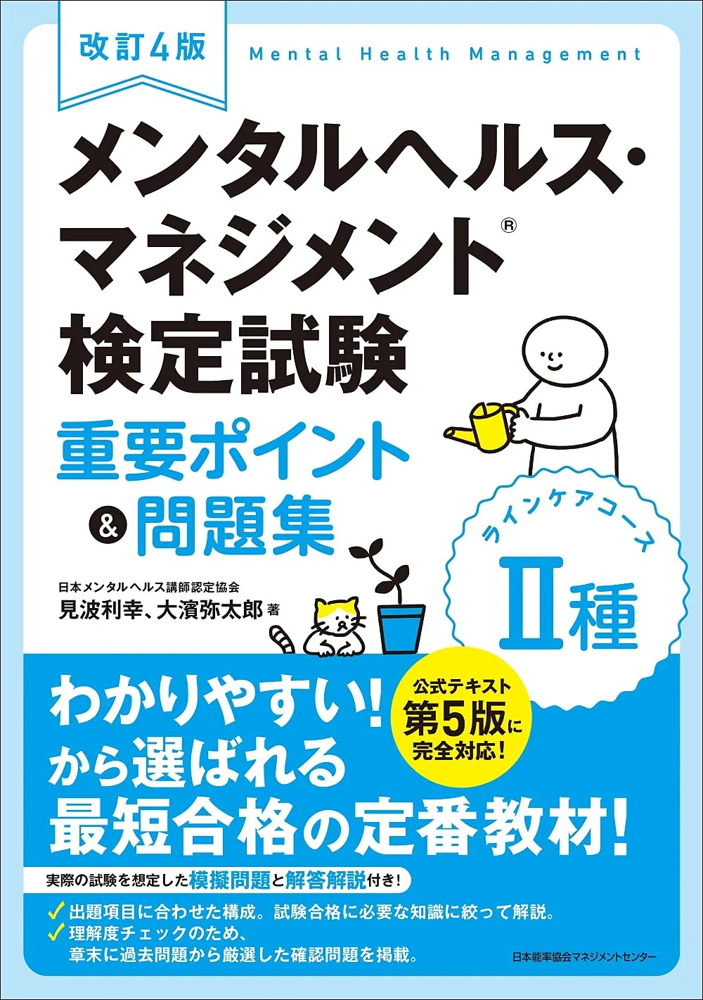
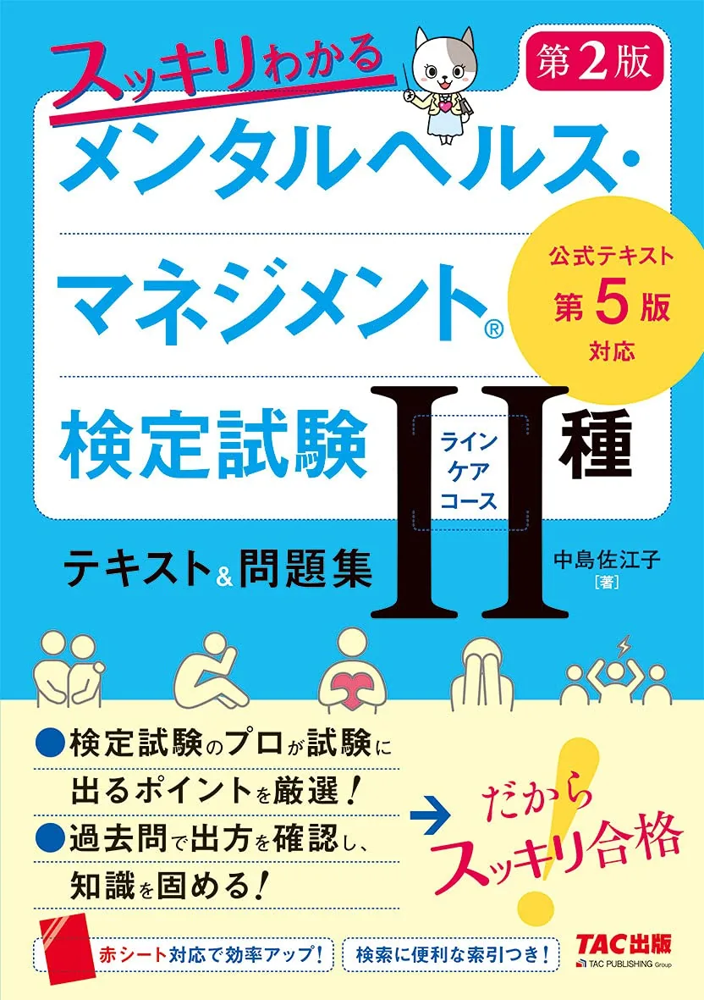

メンタルヘルス・マネジメント検定II種のおすすめ問題集3選【2027年度版・過去問】
メンタルヘルス・マネジメント検定II種は、テキストを読んだだけでは得点が安定しません。問題集で手を動かし、本番形式に慣れることが合格への近道です。この記事では、過去問型・要点＋演習型・テキスト併用型の3冊を、形式・価格・役割の観点で比較します。買うタイミングと使い方もあわせて整理します。価格は購入前に販売ページで確認してください。
この記事の信頼性について
| 執筆 | メンタルヘルス二種マスター編集部（資格学習サイトの編集チーム） |
|---|---|
| 確認 | 公式情報確認担当（公開前に一次情報・販売ページと照合する担当者） |
| 事実確認日 | 2026-11-13 |
| 主な参照元 |
1問題集を買うタイミング
問題集は、早すぎても遅すぎても効果が下がります。テキストで全体像をつかんでから入るのが基本です。
タイミングの目安は次のとおりです。
- テキストを7領域とも一通り読み終えた後
- 用語の意味がだいたい分かる段階
- 本番の2〜3か月前までに演習を始める
まったくの知識ゼロで問題集から始めると、解説の理解に時間がかかります。テキストで土台を作ってから演習に入ると、間違いの理由を自分で説明できるようになります。本番の50問・120分に慣れるため、仕上げには通しで解ける教材を1冊持っておくと安心です。
おすすめ問題集3選（比較）
価格・在庫・版情報は執筆時点（2026-06-12）のAmazon税込参考です。購入前に必ず販売ページでご確認ください。
| 順位 | 商品名 | 価格（税込参考） | ページ数 | 向いている人 |
|---|---|---|---|---|
| 1 | メンタルヘルス・マネジメント検定試験 II種 ラインケアコース 過去問題集 2025年度版 | ¥2,530 | 256 | 過去問形式で本番に近い演習をしたい人 |
| 2 | 改訂4版 メンタルヘルス・マネジメント検定試験II種 ラインケアコース 重要ポイント&問題集 | ¥2,200 | 256 | 要点整理と問題演習を短時間で回したい社会人 |
| 3 | スッキリわかる メンタルヘルス・マネジメント検定試験Ⅱ種 テキスト&問題集 第2版 | ¥2,200 | 272 | テキスト併用型で演習量を確保したい初学者 |

メンタルヘルス・マネジメント検定試験 II種 ラインケアコース 過去問題集 2025年度版
- 直近10回分の過去問を7領域別に整理
- テキスト第1周後の演習1冊目候補
- 解説で出題傾向を把握しやすい

改訂4版 メンタルヘルス・マネジメント検定試験II種 ラインケアコース 重要ポイント&問題集
- 重要ポイントの整理と問題が1冊
- 通勤学習向けのコンパクト構成
- 過去問集と役割分担して使いやすい

スッキリわかる メンタルヘルス・マネジメント検定試験Ⅱ種 テキスト&問題集 第2版
- 章末問題で理解度をその場で確認
- テキスト記事と縦串で使える
- 過去問集の前段階の演習にも向く
2過去問題集 2025年度版（中央経済社）
過去問題集は、本番に最も近い形式で演習できる1冊です。出題の傾向を体で覚えたい人に向いています。
特徴は次のとおりです。
- 実際の出題に近い形式で演習できる
- 7領域の出題傾向をつかめる
- 本番の時間感覚を試せる
価格は執筆時点の税込参考で2,500円前後です。テキストを一通り終えた後、仕上げの演習に使うと効果的です。解いたら領域別に正答率を記録し、弱い領域をテキストで復習する流れを作ってください。
3重要ポイント&問題集 改訂4版（能率協会）
重要ポイント&問題集は、要点整理と演習が一体の1冊です。短時間で効率よく回したい社会人に向いています。
特徴は次のとおりです。
- 要点のまとめと問題が一緒になっている
- 忙しい人でも範囲を素早く確認できる
- テキストの復習と演習を同時に進められる
価格は執筆時点の税込参考で2,200円前後です。通勤時間などの細切れの時間でも、要点確認と演習を同時に進められます。まとまった時間が取りにくい人の、効率重視の1冊として選びやすい構成です。
4スッキリわかる 第2版（TAC出版）
スッキリわかる第2版は、テキストと問題が一体の1冊です。テキスト記事でも紹介した、独学の定番書です。
特徴は次のとおりです。
- テキストと演習を1冊で回せる
- 図解が多く初学者が取り組みやすい
- テキストと問題集を分けたくない人に向く
価格は執筆時点の税込参考で2,200円前後です。すでにこの1冊でテキストを学んでいる人は、そのまま演習に使えます。テキストと問題集を別々に用意するのが負担なら、1冊完結型として選ぶ方法もあります。
5問題集の使い方（分野別から通しへ）
問題集は、ただ解くだけでなく使い方で差がつきます。分野別から始めて、通し演習で仕上げる流れが効果的です。
使い方の手順は次のとおりです。
- まず7領域を分野別に解いて弱点を見つける
- 正答率70%未満の領域を集中して解く
- 仕上げに50問を120分で通しで解く
間違えた問題は、理由を短くメモして用語を確認してから次へ進みます。分野別と通しを往復すると、合計点が安定して70点を超えていきます。通し演習は本番の時間配分を練習する場にもなります。
69月の50問通しと解き直しループ
問題集導入後。
- 50問120分通し→誤答7領域タグ→7日後解き直し
- のループ
| 週 | 作業 |
|---|---|
| 月 | 過去問15問（記録） |
| 水 | 誤答5問の用語を確認 |
| 土 | 同15問解き直し |
| 月末 | 50問120分通し·70点計測 |
7よくある質問
問題集はいつから始めればよいですか？
過去問型と要点＋演習型のどちらを選ぶべきですか？
問題集は何冊必要ですか？
記事の基本情報
| ジャンル | 独学対策 |
|---|---|
| タグ | 独学 / 教材 / 学習計画 |
公式情報の確認
公式情報の確認：メンタルヘルス・マネジメント検定II種の最新情報は、試験のご紹介（公式）などの公式情報を必ず確認してください。本人に割り当てられた試験会場は受験票の表記が正本です。